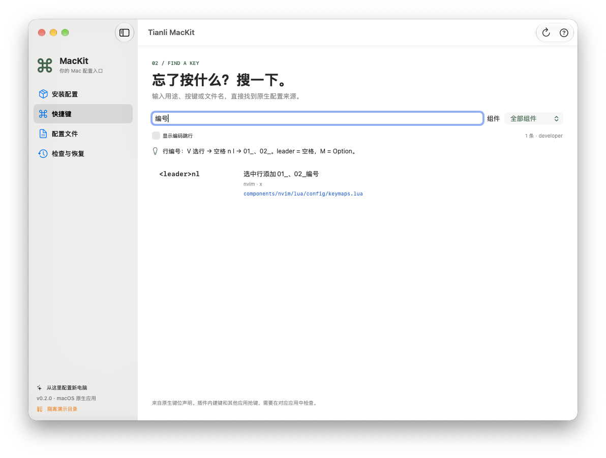

一个入口，找到配置
配置文件 → 读取文件 → 备份并保存
主配置和快捷键分别打开。行号、终端、桌面热键都有明确来源。
NATIVE MAC APP / OPEN SOURCE
忘了快捷键，找不到配置文件？
把终端、编辑器和桌面习惯，收进一套
找得到、改得明白、能恢复的配置。
v__VERSION__ · macOS 14+ · Apple Silicon · 免费开源

LESS HUNTING, MORE DOING
应用仍然使用自己的配置格式。MacKit 把入口、键位、个人偏好和恢复记录整理好。
配置文件 → 读取文件 → 备份并保存
主配置和快捷键分别打开。行号、终端、桌面热键都有明确来源。
快捷键 → 输入“编号” → 查看按键与来源
搜索功能描述，同时看到按键、模式与源文件；在线手册由相同声明生成。
预览配置变化 → 备份并安装 → 按记录恢复
已有配置先备份。每次安装有恢复记录，重复应用不会叠加改动。
SEE IT WORK
命令行补充演示 · v__MEDIA_VERSION__。在隔离目录运行真实 CLI，按步骤回放输出；App 界面见上方截图。
GET STARTED
App 自带运行环境，无需先装 Python 或 Git。支持 macOS 14+ 和 M 系列芯片，Developer ID 签名并经 Apple 公证。
在“下载”文件夹打开 DMG，把 Tianli MacKit 拖到 Applications。然后从“应用程序”打开。
下载 Mac App · v__VERSION__ ↓在“安装配置”选预设和组件，点“预览配置变化”。点“安装缺失软件与依赖”；没有 Homebrew 时，先用 App 的“安装 Homebrew”入口完成系统安装器。
确认文件列表后，点“备份并安装配置”。重新打开终端和相关应用；在“检查与恢复”检查结果或恢复原配置。
管理员密码只在系统安装器输入。桌面权限按应用提示确认；yabai/skhd 服务仍需手动安装与启动。下载校验值 · 发行说明 · CLI 配置包（含 Intel 用法）
YOUR HABITS, YOUR CHOICE
保留习惯不等于把同一套激进热键强加给所有人。默认从终端组件开始。
保留 Neovim 原生移动键与 Ctrl-W 窗口操作。桌面全局热键不默认启用，AI 插件不默认启用。
App 选择 Developer · 通用开发
S 保存，Q 退出，J/K 跳 15 行；右 Option → Hyper、右 Command 切应用。Hammerspoon 菜单里逐项开关。
App 选择 Tianli · 个人习惯
已安装用户切换预设前，先在“检查与恢复”恢复当前安装。个人路径、账号和设备标识留在 ~/.config/mackit，不随开源包分发。
WHEN YOU GET STUCK
Neovim 中按 V 选中行，用 j/k 扩选，再依次按「空格 n l」，文本会变成 01_、02_。屏幕左侧的行号是另一项设置，用 mackit edit number 修改。
回到“安装配置”，预览后点击“安装缺失软件与依赖”。若安装器要求管理员密码或权限，在系统窗口完成；遇到网络失败，可保留已有成果后重试。
先检查能否用 Git 访问 GitHub，再重新打开 Neovim，运行 :Lazy sync。代理返回 503 时需修复网络后重试。原生编辑不依赖 AI 账号；Copilot 只在个人预设启用，使用前需自行授权。
确认使用 tianli 预设，Hammerspoon 正在运行，并在 macOS「隐私与安全性」授予它辅助功能权限。点击菜单栏 ⌨ 检查开关。Karabiner 的系统扩展与输入监控权限按 App 自带引导完成。MacKit 不替你启动 yabai/skhd 服务。
打开“检查与恢复”，点击“恢复最近一次安装”，按从新到旧的顺序恢复。如果你安装后换成了新文件，恢复命令会提示先保留新内容，避免覆盖。
doctor 检查套件内的声明范围与重复键。系统权限、插件内建默认键，以及其他 App 是否抢先拦截，需要运行时核查；它不会把“配置存在”当成“按键一定送达”。